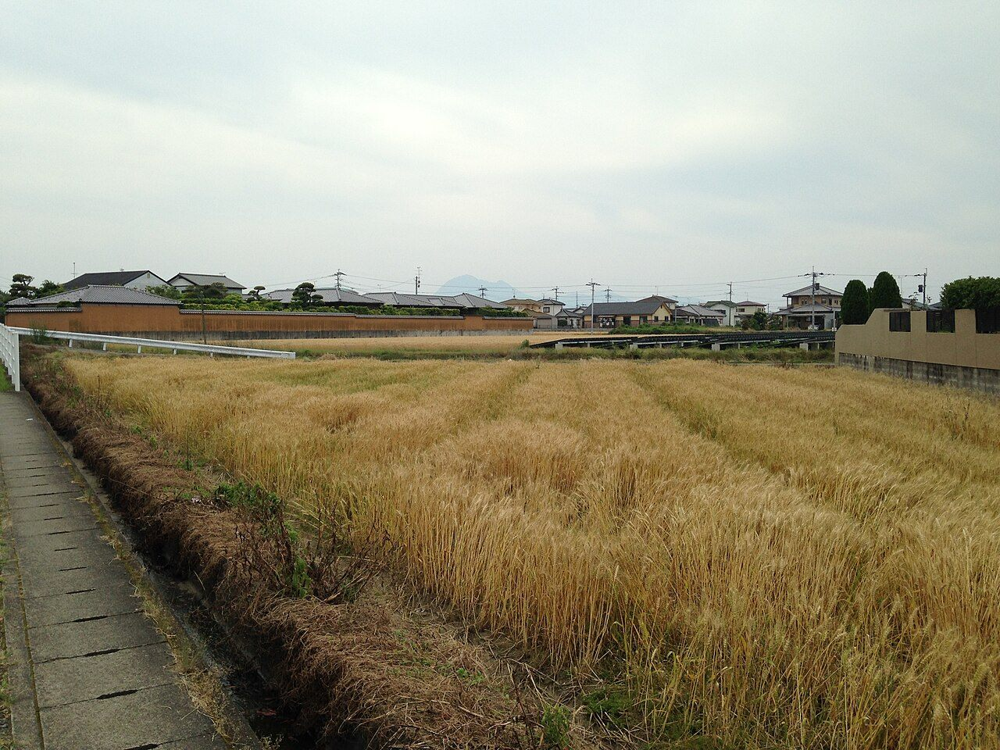
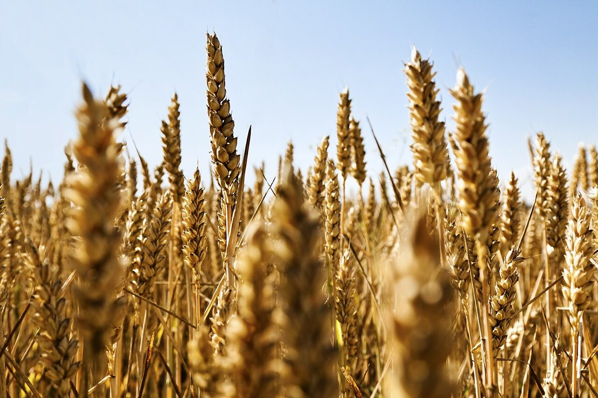

試作サンプル(営業用・非公開)
掲載写真はフリー素材のイメージで、店舗の実際の写真ではありません。日本国内の他地域、海外、撮影地不明のものを含みます。
お店について
お店について
お店の考え方や歴史などは、確認できた内容のみ掲載します。
- 店名
- BAKERY Bake-Do ベイク・ドゥ
- 業種
- ベーカリー
- 住所
- 宮崎県宮崎市太田4-3-18
- 電話
- 090-5363-5854
- @bakery.bake_do
- 営業時間
- 準備中(お問い合わせください)
- 定休日
- 準備中(お問い合わせください)
- 駐車場
- 準備中(お問い合わせください)


このサイトについて
このサイトは、制作側の案による営業用サンプルです。店舗が公開しているページではありません。
コンセプト「知りたいことが、ひと目で分かる一枚」も制作側の案であり、店舗の公式な見解ではありません。
営業時間・料金・メニュー・スタッフ・こだわりなどは、準備中です(お問い合わせください)。
このページの構成と文面は、制作側の案にもとづく営業用サンプルです。店舗の公式な見解ではありません。